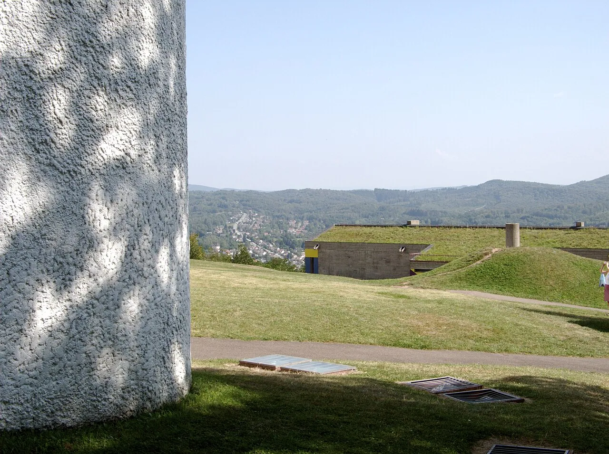
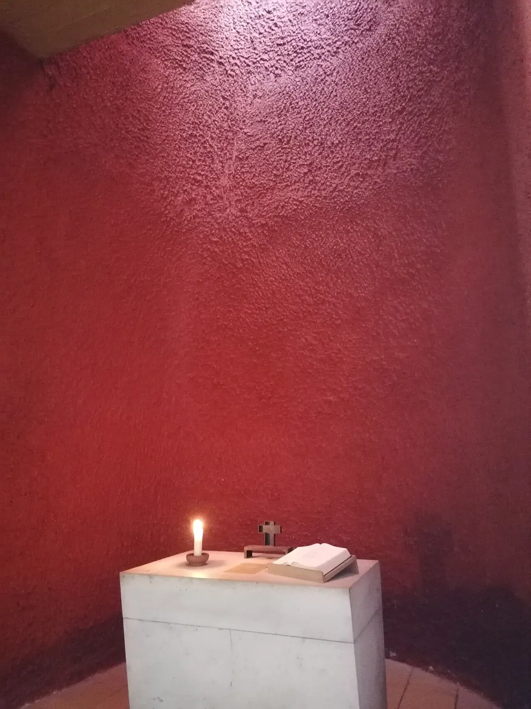

Photos unavailable1/8Drawing: Find Great Architecture · CC BY 4.0

2/8 · ExteriorPhoto: Sandra Cohen-Rose and Colin Rose from Montreal, Canada · CC BY 2.0 · source3/8 · Interior · Chapelle Notre-Dame-du Haut de RonchampPhoto: FrDr · CC BY-SA 4.0 · source

4/8 · Interior · Chapelle intérieure rouge de la chapelle Notre-Dame du Haut à Ronchamp en octobre 2019Photo: Marianne Boudoy · CC BY-SA 4.0 · source5/8 · Interior · Chapelle intérieure de la chapelle Notre-Dame du Haut à Ronchamp en octobre 2019Photo: Marianne Boudoy · CC BY-SA 4.0 · source6/8 · Interior · Chapelle Notre-Dame-du Haut de RonchampPhoto: FrDr · CC BY-SA 4.0 · source7/8 · ContextPhoto: Sandra Cohen-Rose and Colin Rose from Montreal, Canada · CC BY 2.0 · source8/8 · ModelPhoto: 丘崈 · CC0 · source
Portrait: Joop van Bilsen for Anefo · CC0 · source
About Notre-Dame du Haut
Notre-Dame du Haut (English: Our Lady of the Heights; full name in French: Chapelle Notre-Dame du Haut) is a Roman Catholic chapel in Ronchamp, France. Built in 1955, it is one of the finest examples of the architecture of French-Swiss architect Le Corbusier. Blessed in 1955, it was consecrated in 2005. The chapel is a working religious building and is under the guardianship of the private foundation Association de l’Œuvre de Notre-Dame du Haut. It attracts 80,000 visitors each year. In 2016, it was inscribed on the UNESCO World Heritage List in along with sixteen other works by Le Corbusier, because of its importance to the development of modernist architecture.